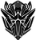
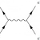

<p><a href="http://blog.technariumas.lt" title="Kas vyksta?">Blog'as</a></p>
<p><a href="equipment.html?language=lt" title="Įrankiai ir įranga">Įrankiai &amp; įranga</a></p>
<p><a href="faq.html?language=lt" title="FAQ">FAQ</a></p>
<p><a id = 'joinLink' href="join.html?language=lt" title="Prisijunk prie Technarikų!">Prisijunk!</a></p>
<p><a href="projects.html?language=lt" title="Projektai ir idėjos">Projektai &amp; idėjos</a></p>
<p><a href="friends.html?language=lt" title="Mūsų draugai">Mūsų draugai</a></p>
<p><a href="support.html?language=lt" title="Palaikykite mus">Palaikykite mus</a></p>
